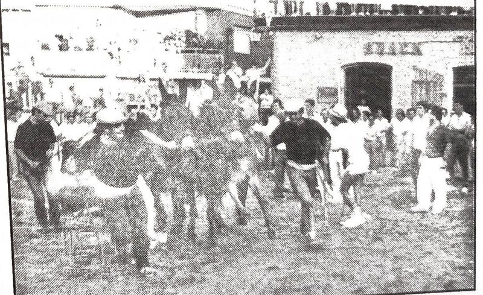
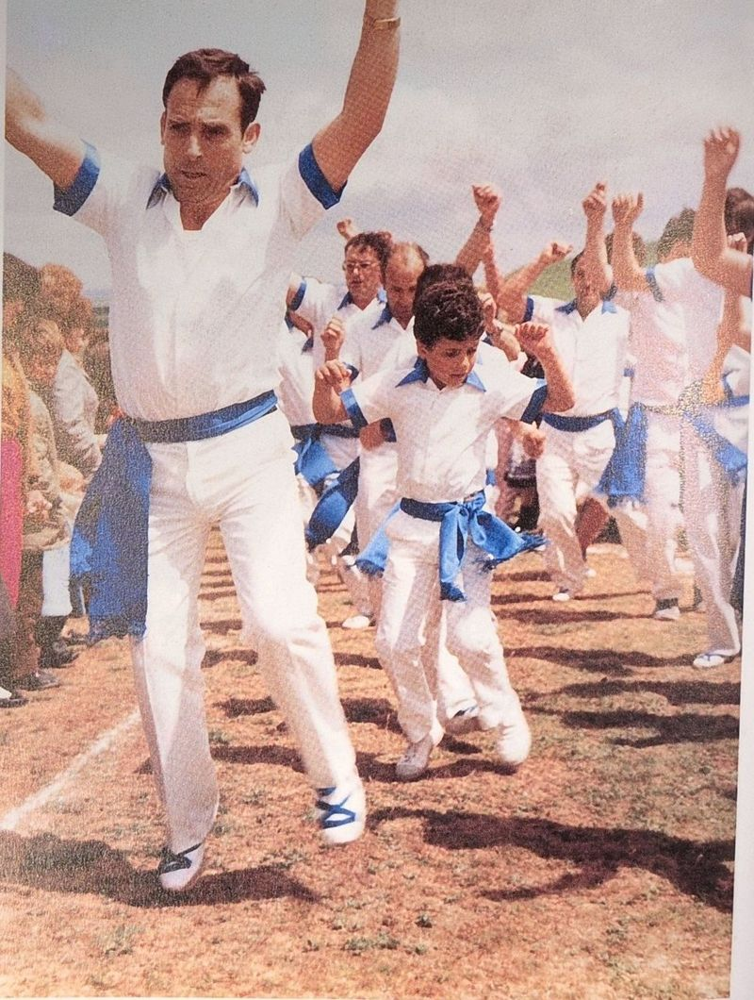

Las fiestas de la Virgen de la Casita
La romería del 10 de mayo, la Mariseca de agosto y las fiestas patronales de septiembre, de los programas de 1905 a hoy.
En esta página (8 apartados · 29 min de lectura)
Nuestra Señora de la Casita, patrona de Alaejos, tiene dos fiestas: la romería del 10 de mayo, aniversario de la aparición, y las Fiestas Patronales de septiembre, en torno al día 8, las mayores del año. Entre una y otra, desde el 14 de agosto, la Mariseca, una vaca en lo alto de un mástil, anuncia en la Plaza Mayor que llega el tiempo de fiesta. Los toros, que ocupan buena parte de esos días, tienen página propia.
La patrona y su cofradía
La historia de la ermita y de la imagen, los libros de la Cofradía de Pastores desde 1712 y la bajada de la Virgen a Santa María están en la página de la ermita de la Virgen de la Casita. Aquí, las fiestas.
La página de la ermita de la Virgen de la Casita desarrolla con detalle todo lo que sabemos de la patrona. Aquí recogemos lo esencial para entender las fiestas. Según la tradición, el 10 de mayo de 1490, en un año de sequía, la Virgen se apareció entre unas retamas a Catalina de la Cruz, una vecina pobre que buscaba hierbas. Los vecinos le levantaron una cabaña de maderos, la «casita» que le da nombre, y llovió. El relato escrito más antiguo es del jesuita Juan de Villafañe (Compendio histórico, Salamanca, 1726), y no se conoce ningún documento de la época de la aparición. La tradición oral añadió más tarde otros detalles: la Virgen habría marcado con los dedos el rostro de Catalina, las campanas habrían sonado solas, Catalina habría amasado siete panes con masa para uno. A Catalina se la llama a veces «santa», pero no hay ningún proceso de canonización. Una inscripción gótica del muro sur se ha leído como un lunes 10 de mayo de 1490, aunque no todos aceptan esa lectura.
Lo que sí está documentado es la antigüedad de la imagen. Es una talla sedente de 41 centímetros, con el Niño y una manzana, que Jesús Urrea fecha en la segunda mitad del siglo XIII, lo que la convierte en la obra más antigua del patrimonio religioso de Alaejos. Su corona de plata es obra del platero salmantino Diego Gómez, hacia 1760-1770. En 1672 un pleito llamaba a la ermita «de Nuestra Señora de la Visitación» (véase La ermita de la Virgen de la Casita). En 1699 la cofradía del Santísimo renunció a sus fiestas para que su dinero se destinara a reparar el santuario (Ojeda Nieto, programa de 1995). La Virgen de la Casita es, además, abogada de la lluvia: sus gozos piden agua y las rogativas siguen vivas.
La Cofradía de Pastores se rige por unas Reglas y Constituciones de 1712, aunque puede ser más antigua. Tenía rebaño propio y con él pagaba los danzantes, los cohetes y las andas. Sus libros recogen, por ejemplo, los 12 reales que pagó en 1714 al tamborilero y a la danza, las andas nuevas de 1719 y el capellán que nombró en 1720 con aprobación de la vicaría de Medina del Campo (Araújo, programa de 1988). Tuvo cofrades de varios pueblos de la comarca, y hoy solo los tiene de Alaejos. Su bandera es azul, con una M de galón dorado. En las vísperas de septiembre la cofradía sube con bandera, dulzaina y tamboril desde el Árbol de la Virgen hasta la ermita, y allí el mayordomo saliente entrega la vara al entrante. En 1986 ya se advertía que el recorrido, que antes se hacía a pie, se hacía en coche (Araújo, programa de 1986). El Árbol de la Virgen tenía su propia costumbre: los niños metían piedras en los huecos de su base para tener suerte. Lo derribó un temporal el 14 de febrero de 1941, y a comienzos de los años noventa se plantó otro (Lucas Castander, programa de 1996). Si quiere rezar la novena, puede descargar las ediciones de 1865 y 1952 y una de 2026 en castellano actual (véase Novena de la Virgen de la Casita).
Jesús-Manuel Losa Hernández contó en el libro del V Centenario cómo celebraba la cofradía sus fiestas en 1990. Cada año nombra un mayordomo, que hace de presidente, y dos diputados o vocales, en una junta que se celebra hacia el 5 de agosto, día de la Virgen de las Nieves. El 7 de septiembre, a mediodía, el mayordomo saliente saca el estandarte y lo pone a la puerta de su casa. Por la tarde se reúnen allí los cargos entrantes y salientes y los cofrades, y salen con el estandarte y las varas, al son de la charambita, hasta el final de la calle de la Casita, donde suben a un remolque con bancos. En el Árbol de la Virgen bajan y se cambian las varas: el mayordomo saliente entrega la suya al entrante, y lo mismo los diputados. El resto del camino lo hacen andando. Mientras, las campanas de Santa María tocan a vísperas, que se celebran en la ermita. A la vuelta hay refresco y una hoguera en la calle, ante la casa del nuevo mayordomo, donde queda el estandarte hasta la mañana siguiente.
El 8 de septiembre, hacia las once, los cofrades suben de nuevo a la ermita para la misa solemne que encarga la cofradía, presidida por sus mayordomos y las autoridades. Después, el párroco saca la imagen del trono y se la entrega al alcalde, que la lleva hasta las andas. A la salida las portan miembros del Ayuntamiento, y por la pradera, voluntarios. Delante van el estandarte de la cofradía, el mayordomo y los diputados con sus varas; detrás, el sacerdote y el Ayuntamiento, y mientras tanto bailan los danzantes y suena la campanilla de la ermita. Al terminar, los concejales vuelven a entrar a la Virgen mirando hacia el pueblo mientras se toca el Himno Nacional. La fiesta acaba con otro refresco en casa del mayordomo, con el Ayuntamiento, las reinas de las fiestas y algunos invitados.
Los gastos corren a cargo del mayordomo si lo es voluntariamente; si no hay voluntario, la cofradía nombra un mayordomo forzoso y paga ella. Cada cofrade paga una cuota anual, las hijuelas, que en 1990 era de cien pesetas. Se han perdido algunas costumbres: la rifa de un cordero, la cena de los cofrades a finales de septiembre, el cirio encendido que cada uno tenía que sostener durante la misa y las hachas que llevaban a los funerales; las misas por los cofrades difuntos se siguen diciendo. En 1990 la cofradía tenía 133 cofrades. Su mayordoma y presidenta era Faustina Losa Benito; el secretario, Eugenio Aguado, lo era desde 1954, y antes lo había sido Santos Hernández. El cofrade de más edad era Lucilo Gómez.
Once años después, en 2001, la cofradía tenía más de 150 cofrades, «todos ellos pastores o hijos e hijas de pastores», y la presidía Federico Aguado. El libro que los recoge, Alaejos, del sepia al color, añade algunos datos de sus orígenes. Las ordenanzas, aprobadas el 23 de agosto de 1712, exigían en su capítulo octavo ser pastor y llevar vida ejemplar, pero ya en la visita del abad del 12 de agosto de 1713 se admitió a quien, sin ser pastor, tuviera buenas costumbres. No hacía falta ser de Alaejos, y entre los fundadores hay vecinos de pueblos cercanos. Capellanes y notarios entraban al ser nombrados, a veces con sus parientes y esposas, y en 1716 se admitió también a los danzantes y a las camareras de la Virgen a cambio de sus servicios. Cada aspirante entraba presentado por un cofrade que respondía de su cuota, la manda, que solía ser una oveja o una borrega emparejada; así crecía el rebaño de la Virgen, que tenía también tierras. La primera fiesta de la cofradía fue el 8 de septiembre de 1712, y entre sus primeros cargos había un sepulturero para enterrar a los cofrades difuntos (Caballero Morante, Alaejos, del sepia al color, 2001).
La romería del 10 de mayo
El 10 de mayo, aniversario de la aparición según la tradición, es la primera fiesta de la patrona y la más religiosa de las dos. Hay novena, vísperas con repique (el 9 de mayo era día de tocar a pino), ofrenda de flores y reparto de la torta de Alaejos. Al mediodía se celebran misa y una procesión que da la vuelta a la ermita con la charambita (dulzaina y tamboril). En los últimos años se ha sumado una subida en bicicleta (véase La ermita de la Virgen de la Casita). Durante la vuelta a la ermita se sientan niños pequeños en las andas para ponerlos bajo la protección de la Virgen, y en 1987 se contaban por decenas (Benito Álvarez, programa de 1987). La novena más antigua que conocemos, la del capellán de San Pedro Isidro Santana Escudero (1782-1858), se rezaba del 2 al 10 de mayo.

Hay años en que la Virgen baja al pueblo. La imagen va en procesión a Santa María por calles con arcos de retama y flores, en recuerdo de la aparición. Allí se le da trato de alcaldesa de honor, y vuelve a la ermita un 10 de mayo con romería. Se dice que la bajada se hace cada diez años. La de 2010 fue el 4 de mayo, y la de 2020, aplazada por la covid, se celebró en 2022 (véase La ermita de la Virgen de la Casita).
La Mariseca, del 14 de agosto al 10 de septiembre
La Mariseca se coloca el 14 de agosto, víspera del 15, según el testimonio de un vecino recogido por este archivo. El programa de 2026 lo confirma: ese día las peñas cuelgan sus banderas en el balcón del Ayuntamiento, una de ellas pronuncia el pregón de la Mariseca y una charanga acompaña a la Mariseca hasta la Plaza Mayor. Allí permanece hasta el 10 de septiembre, cuando se retira. Ya en 1990 se escribía que el 15 de agosto, el día en que todo el pueblo iba al campo a ver los toros, se exponía la Mariseca como anuncio de las fiestas de la Casita (Jaime Caballero, programa de 1990). Durante casi un mes, la Mariseca marca el tiempo de fiesta del pueblo.
Qué es la Mariseca lo explicó Armando Caballero Morante en 2001: es la imagen de una vaca puesta en la punta de un mástil. Entonces se colocaba el 15 de agosto en el balcón más alto del Ayuntamiento, y anunciaba que habría toros en las fiestas y que los tablados ya estaban rematados, es decir, adjudicados a una empresa. «Cuando éramos pequeños decíamos que para donde mirara la Mariseca por allí vendría el encierro» (Caballero Morante, Alaejos, del sepia al color, 2001). Cuatro años antes, en Alaejos, a la antigua usanza (1997), el mismo autor la había definido de otra manera: «figura de un toro que se coloca en lo alto de un palo en el balcón del Ayuntamiento, el día 15 de agosto, indicando que en el pueblo habrá toros en fiestas; y se hacía el remate o ajuste de los tablados». Una de las peñas de 2001 se llamaba precisamente La Mariseca (véase Las peñas).
Lucas Varela la describe en 2024 como «la silueta metálica de un toro berrendo en negro», y cuenta que la que se ponía en el balconcillo del Ayuntamiento cuando los de la quinta de 1950 eran niños la encontró el sacristán, el señor Mauro, en el huerto de la familia Lucas Varela, en el cruce de la calle Peñaranda con la de los Callejones. Allí estuvo, según él, la primitiva plaza de toros del pueblo: el huerto tiene forma de pera y, visto desde arriba, se distingue el coso (Alaejos. Una antropología cultural, 2024, pág. 95).
Las fiestas de septiembre, de 1905 a hoy
Las Fiestas Patronales en honor de Nuestra Señora de la Casita giran en torno al 8 de septiembre, la Natividad de la Virgen, que los programas llaman «Día de la Patrona». La novena va del 31 de agosto al 8 de septiembre (véase La ermita de la Virgen de la Casita). Para conocer su forma antigua contamos con un artículo excepcional. Adelio Castaño Casquero leyó los programas de 1905, 1907 y 1910 y reconstruyó unas fiestas que duraban del 7 al 10 de septiembre. Empezaban con una diana de la Banda Municipal y las dulzainas y seguían con gigantes y cabezudos, pelota en el Frontón Alegría, fuegos artificiales y teatro. El día 8 había encierro a las cinco de la mañana por las calles Tejares y Zabacos hasta la Plaza Mayor, misa en la ermita con procesión y baile de los devotos, y por la tarde novillada en la Plaza Mayor cerrada, con capacidad para unos 3.000 espectadores. Se ofrecía incluso un servicio de transporte a la ermita por 50 céntimos ida y vuelta. Su conclusión fue que aquellas fiestas, «en lo fundamental no han variado mucho», respecto de las de los años ochenta (Castaño Casquero, programa de 1984). Si quiere ver aquellas fiestas con más detalle, la página El siglo XX resume las de 1905.
El programa más antiguo que conserva este archivo es el de 1954, que se abre con una bienvenida dedicada a la patrona (programa de 1954). En 1971 los programas defendían una Comisión de Festejos que lo organizara todo, frente a las peñas o el Ayuntamiento por separado (García Martínez, programa de 1971). En 1987 las fiestas se describían como una mezcla de actos religiosos, corridas, encierros a pie y a caballo presididos por la Mariseca, peñas y verbenas, con un momento propio, la noche de las tracas. Esa noche los mozos pasaban bajo las chispas de cohetes y molinetes, y cuando al final aparecía un dibujo de la Virgen, los mozos «rivalizan por apoderarse del dibujo» (Benito Álvarez, programa de 1987). Hoy, la víspera de la patrona, una quema de fuegos y carretillas termina en la capilla de la Virgen. Es posible que sea la heredera de aquella noche, aunque no lo hemos comprobado.
Entre una y otra descripción, la de 1991 recoge el ambiente de aquellos años. Cuando empezaban a montarse en la plaza los tablados, «a todo alaejano le hierve la sangre». La gran víspera era el 7, con dianas, desfile de peñas y las tracas, y en las peñas no faltaba algún «Tío Maragato». El 8 el encierro era muy temprano. A mediodía había misa y romería en la ermita, con la procesión en la que se ofrecían a la Virgen los recién nacidos del pueblo, y el baile de la charambita, a cargo de la Cofradía de Bailarines «y de todo el que se preste». La Plaza Mayor estrenaba entonces talanqueras de palos verticales, que dejaban participar a quien se atreviera (Rodríguez Carracedo, Alaejos, apuntes histórico-artísticos, 1991, pág. 44).
El libro de 2001 cuenta las fiestas del año 2000. Unos días después del 15 de agosto se celebraba el día del alaejano ausente, con misa de acción de gracias en la ermita, una fiesta campera en la finca del ganadero con sardinas, panceta y vaquillas, y por la noche una verbena en la que se elegían la reina y las damas de las fiestas. La víspera, el 7 de septiembre, en la verbena de la Plaza Mayor «se queman las carretillas y al final aparece el cuadro de la Virgen y la juventud pasa por debajo cuando están encendidas»: la noche de las tracas seguía viva. Antes había habido competiciones, un certamen literario, el desfile de peñas y un homenaje a los mayores que cumplían ochenta años. El 8, después de la misa, se seguía subiendo a los niños a las andas, «como el día 10 de mayo». Por la tarde se celebró el VI Concurso de Cortes Villa de Alaejos, con toros de los «Chulas» y premios de 100.000, 50.000 y 25.000 pesetas. El 9 hubo novillada y suelta de vaquillas, y el 10 empezó con la vaca del aguardiente y el encierro a caballo «desde la Argentina», y terminó con rejoneo, fuegos y charanga. No faltaron la carne para las peñas, la paellada, las sopas de ajo y las jotas del Grupo de Rondalla y Danzas (Caballero Morante, Alaejos, del sepia al color, 2001).


La estructura actual, según el programa de 2026, tiene tres tiempos. La apertura oficial, el último sábado de agosto, comienza cuando una agrupación de dulzaineros va a buscar a las reinas a sus casas. Sigue la proclamación de las reinas, una de ellas infantil, y después el pregón. En 2019 lo dio Demetrio Madrid, primer presidente de la Junta de Castilla y León (El Español, 1-9-2019), y en 2026, una magistrada del Tribunal Superior de Justicia de Castilla y León natural del pueblo. Llega luego una semana de juegos y homenajes: calva, tanga, petanca y pelota a mano, un día infantil y el Día de nuestros mayores, en el que se entrega una placa a quienes cumplen ochenta años. El tercer tiempo es la recta final, del 5 al 10 de septiembre. Empieza con el desfile de peñas y sigue el día 7 con el izado de la bandera, el repique de campanas, la mojada popular y la paella. Esa tarde se celebran las vísperas de la Cofradía de Pastores con el cambio de la vara de mayordomo, y por la noche, los fuegos. El 8 de septiembre empieza con una diana a las seis de la mañana, un encierro a las ocho y la misa solemne a mediodía, con autoridades, reinas, cofradía y bailarines. Después la Virgen da la vuelta a la ermita mientras los bailarines bailan la charambita, y por la tarde hay festejo taurino. El día 10, tras el encierro a caballo y las vaquillas, la charanga lleva a todos de la plaza de toros a la Plaza Mayor, donde se retira la Mariseca, y con ella se dan por terminadas las fiestas (Programa de fiestas de 2026).
Una advertencia sobre lo que circula en internet. Una web agregadora de festivales describe las fiestas de 2025 con una «procesión por el centro», novilladas en un coso «renovado» y exhibiciones de paloteo. Ninguno de esos datos aparece en fuentes locales, y el primero contradice lo que todos los programas describen, que es una procesión alrededor de la ermita. Parece texto genérico y no debe tomarse como fuente.
Los pregoneros
El pregón abre las fiestas de septiembre. No hay una lista completa de quienes lo han dado, pero desde 1987 el Ayuntamiento les entrega la insignia con el escudo de la villa (véase Escudo, bandera y distinciones), y gracias a eso José Luis Pérez Muñoz pudo reunir estos nombres en 2008 (programa de 2008):
| Año | Pregonero | Entonces |
|---|---|---|
| 1987 | Fernando Zamácola Garrido | consejero de Agricultura de la Junta de Castilla y León |
| 1988 | Godofredo Garabito Gregorio | poeta y académico de Bellas Artes |
| 1989 | César Otero Villoria | secretario general de la Diputación de Valladolid |
| 1990 | Celso Vázquez Gallego | periodista de Televisión Española |
| 1991 | María Dolores Ortega Peinado | diputada a Cortes por Valladolid |
| 1992 | Carmen Lucas Lucas | directora general de Administración Territorial de la Junta |
| 1993 | Francisco González | director de los servicios informativos de Radio Nacional en Castilla y León |
| 1994 | Juan Colino Salamanca | diputado del Parlamento Europeo |
| 1995 | José Antonio Ortega Fernández | músico del grupo Candeal |
| 1996 | Julio Mangas Manjarrés | catedrático de Historia Antigua |
| 1997 | Antonio Monsalvo García | |
| 1998 | Javier Solana Sedeño | periodista de La Voz de Medina |
| 2000 | Leire Pajín Iraola | diputada en el Congreso |
| 2001 | Jesús Quijano González | procurador en las Cortes de Castilla y León |
| 2007 | Adelio Castaño Casquero | maestro y primer alcalde democrático, que recibió la insignia de oro |
La charambita y los danzantes
La tradición más propia es la de los danzantes. Bailar ante la Virgen de la Casita está documentado desde 1714. La costumbre decayó y en el siglo XX la recuperó un grupo de vecinos. Hoy la mantiene la Asociación de Bailarines, con un estandarte azul y blanco en el que está bordada la Virgen. Los bailarines bailan al son de la dulzaina y el tamboril desde que la imagen sale de la ermita hasta que vuelve a entrar (Araújo, programa de 1986). Su baile se llama la charambita, el mismo nombre que se da en Alaejos a la dulzaina (véase La ermita de la Virgen de la Casita). Su música se conoce como la «Entradilla de Alaejos», y se toca el 10 de mayo y el 8 de septiembre; su partitura está en el Cancionero. Hay grabaciones antiguas. La Fundación Joaquín Díaz registró el himno, las dianas, la danza de la charambita, los gozos, las rogativas y la salve, y esas grabaciones pueden escucharse con licencia libre en Wikimedia Commons (véase Dichos, cabañuelas y habla).
La propia Cofradía de Bailarines contó su historia en el libro del V Centenario, en un texto de Agustín Rapado y Mariano Rubio. En 1716 la Cofradía de Pastores pagaba a los danzantes un refresco y la mitad de sus libreas, los trajes de gala, que costaban unos catorce reales, y ese año los admitió como cofrades. A principios del siglo XX destacaban como bailarines Ireneo Ramos, Felipe Rodríguez Ramos, Ruperto Muñoz, Cándido López, Felipe Rodríguez Pulgar, Cándido Perlines y Felipe García. Como dulzaineros se recuerdan a Pedro Ramos, «Cazo», y a Manuel López Gallego, y a la caja o tamboril, a Tomás Ramos y Bernardino Ramos, los dos apodados «Sagasta». En 1990 tocaban la dulzaina Manuel Belloso y la caja Agustín Caballero Guerras.
Los danzantes no cobraban: solo pedían ayuda para las libreas. Los músicos, en cambio, recibían el 10 de mayo una propina «según usos y costumbres», que pagaba el párroco con lo que recogían los concejales de las familias de los niños que se subían a las andas. En 1990 la pagaba el Ayuntamiento en mayo y la Cofradía de Pastores en septiembre. Dos anécdotas: un año de los cincuenta el párroco no quiso que se bailara ni que sonara la charambita el 10 de mayo, y Cándido López y Ruperto Muñoz tocaron con un embudo y una lata grande de escabeche para que la costumbre no se perdiera. Y en mayo de 1964, al acabar la novena en el pueblo, la Virgen volvió a su ermita con la «Chiquitita» bailando todo el camino.
La actual Cofradía de Bailarines se fundó a principios de los años setenta, por iniciativa de un grupo de hombres y mujeres, la mayoría jóvenes. Aunque tradicionalmente bailaban solo los hombres, en ella bailan los dos sexos. En 1990 la formaban Félix Rodríguez, Arturo López, Manuel Rapado, dos Agustín Rapado, Ramón Mangas, Ángel Pozo, Mariano Rubio, Eustaquio Bermejo, Miguel Santana, Ángel del Castillo, Juan García, Emiliano Caballero, Miguel Ángel Bermejo, Sara Manjarrés, Teresa Pozo, Celestina Sánchez, María Ángeles Marcos, Beatriz Pozo, Jesús Herrera y Celestino Mangas. Ya entonces temían que se perdiera, y pedían a los jóvenes que no dejaran morir «tan tradicional, antiguo y devoto Baile».
Antonio Lucas Varela, que participó en su fundación, da la fecha exacta en Alaejos. Una antropología cultural (2024): la cofradía se fundó en 1971 por iniciativa de Félix Rodríguez Martínez y Felipe García, y él redactó con ellos los estatutos. La danza que se baila la enseñó «con infinita paciencia» Cándido López, que la recordaba de su juventud. Lucas insiste en que es una danza de honor, un rito religioso, que no se baila para divertir al público sino para honrar a la patrona.

En 2001 la cofradía tenía 108 cofrades, «en su mayoría jóvenes y niños». La presidía Manuel Rapado Santana y era su secretario Agustín Rapado Rodríguez. Tocaban Vanesa Antoraz Rapado a la dulzaina y Agustín Caballero, «Quitín», a la caja o tamboril (Caballero Morante, Alaejos, del sepia al color, 2001).




Los cirios
Los cantos a la patrona son de dos clases: los gozos, el canto histórico recogido en la novena, y los cirios, que Antonio Lucas Varela describe como el fruto de «la espontaneidad de los alaejanos ante su Patrona». Unos y otros vienen de la tradición oral y casi todos piden agua para los campos. Lucas recogió de la memoria popular cinco melodías distintas y varias letras que se adaptan a ellas. Estos son los ocho cirios que publicó en Alaejos. Una antropología cultural (2024, págs. 107-112):
Cirio 1
Pide la lluvia aprovechando la visita de la Virgen al pueblo. Se canta con la melodía del nº 14 del Cancionero: escúchela.
Ya estás en tu villa
patrona bendita,
mándanos el agua
con vuestra visita.
Sois nuestra esperanza,
sois nuestro consuelo,
haced que la lluvia
descienda del cielo.
Esperanza nuestra,
todos te invocamos
y en esta sequía
todos te imploramos.
Cirio 2
Se canta con la misma melodía que el nº 7, «Hoy un pueblo afligido»: escúchela.
A tus plantas venimos, Señora,
aturdidos de pena y dolor
al saber que se agostan los campos
y se acerca una vida de horror.
De este pueblo que sois protectora
nos mandéis la lluvia, por favor,
te pedimos, querida Señora,
la lluvia, por favor,
la lluvia, por favor,
la lluvia, por favor, por favor, por favor,
Señora, por favor.
La escasez es la guerra en los pueblos
y el trastorno de la sociedad,
no permitas, querida Patrona,
padezcamos tal calamidad.
No nos dejes, amada María,
no nos dejes sin tu protección
a tus hijos que siempre confían
por ser Tú la Madre de Dios.
Condensados en Ti van los dones
del que aspira a una vida mejor,
si pecamos danos tus perdones
como a todos Jesús perdonó.
Como blanca y silvestre azucena
que en mis campos un día brotó,
yo te quiero, te ruego y te adoro
y de nuevo renuevo mi amor.
De tus plantas nos vamos, Señora,
confiados en tu protección;
si la lluvia nos mandas Señora,
no nos dejas sin tu bendición.
La lluvia, por favor,
la lluvia, por favor,
la lluvia, por favor, por favor, por favor,
Señora, por favor.
Cirio 3
Es el más breve. Melodía en el Cancionero.
Agua pide el rico
agua pide el pobre
agua los artistas
y los labradores
y los labradores.
Cirio 4
Se canta con la melodía del nº 1: escúchela.
Dios te salve, Reina,
Reina, Dios te salve,
pero esta tu villa,
no la desampares.
Madre nuestra eres
llena de piedad,
de este pueblo triste
tened caridad.
Ten misericordia,
tesoro infinito,
y saca a tu pueblo
de tanto conflicto.
Adiós y llamando,
adiós y gimiendo,
el agua pidiendo
y en Ti confiando.
Cirio 5
Alude al quinto centenario de la aparición (1490-1990).
¡Oh, Virgen de la Casita!
que, de diez en diez de mayo,
has estado con nosotros
hasta el quinto centenario.
Por eso, Virgen bendita,
yo te pido con anhelo
nos tengas también contigo
cuando cumplas el milenio.
Y aunque pasen muchos siglos
y muchas generaciones
los vecinos de Alaejos
nunca se olviden que tienen
una Virgen Chiquitita
que es grande en sus favores.
Y así, en pos de Ti,
y de tu Hijo, el Nazareno,
podamos gozar de Dios
por siempre junto a tu Reino.
Cirio 6
Es el que publicamos en Versos y recuerdos como «Nuevos gozos». Melodía en el Cancionero.
¡Oh, Virgen santa de la Casita!
siempre consuelo del pecador
Madre querida, Virgen bendita,
difunde en todos tu eterno amor.
Pues de tu alma puros reflejos
emanar vemos sembrando el bien,
haz que se extienda por Alaejos
y lo conviertan en un edén.
Si nunca, ¡oh, Virgen!, al desvalido
falta un instante tu protección,
si encuentran eco siempre en tu oído
gritos nacidos del corazón.
Por nuestras obras procuraremos
hacernos dignos de tu bondad,
si lo alcanzamos disfrutaremos
de una completa felicidad.
Qué desconsuelo para una madre
cuando sus hijos la piden pan
y les contesta desfallecida
¡Hijos queridos, si no lo hay!
Ya me despido, Virgen querida,
y yo te pido de corazón
que a este pueblo que tanto quieres
nunca le niegues tu protección.
Cirio 7
Hoy un pueblo afligido a tus plantas
se arrodilla con mucho fervor
a contarte, Señora, sus cuitas
y a que cures su inmenso dolor.
Nuestros campos se secan ¡oh, Virgen!
y en Alaejos no vibra ya al sol
de otros días de espléndida gloria
que alegraban tu Santa Mansión.
Los trigales ya mustios se inclinan
y sin sabia perdiéndose van,
Virgen santa, agua te pedimos
porque el agua es el pan.
Si nos falta tu aliento Casita
Alaejos infausto caerá
abatido, maltrecho y perdido
y jamás lo que ha sido será.
Préstanos, Virgen pura, el aroma
de tu excelsa y gloriosa bondad
que los campos recobren su vida
y Alaejos alegre su faz.
Y en tu santa ilusión todo es vida
todo dulce el amor ideal
para todos, Piadosa, desean
la mansión celestial.
Intercede con tu Hijo amante
que nos mande del cielo el maná
para alivio de todas las plantas
que marchitas se van a quedar.
El sol firme y los rayos ardientes
las devoran ¡tened caridad!
pecadores ¡haced penitencia!
y la lluvia del cielo caerá.
Suene, suene vuestra voz, Señora,
que tus hijos esperando están
de tus manos siempre protectoras
nada les faltará.
Vuestro templo hoy nos representa
la llamada del juicio final
vuestro Hijo como juez supremo
nuestras culpas quiere sentenciar.
Y vos, Madre, sois la defensora
esperamos habréis de alcanzar
el indulto de tantas ofensas
cometidas por la humanidad.
Eres, eres Madre de afligidos
fortaleza y el mismo sostén
pide, pide a tu Hijo divino
que la lluvia nos dé.
¡Agua, Virgen de la Casita!
Cirio 8
En el Cancionero y en el disco Recuerdos musicales de Alaejos empieza «Ya cuatro siglos»; esta versión dice «cinco siglos». Melodía en el Cancionero.
Ya cinco siglos que orando Alaejos
siempre encontró remedio y caridad
todos tus hijos en Ti confiamos
que tus auxilios no nos faltarán.
Las calles adornadas
con toda la ilusión
dan pruebas de cariño
de fe y de devoción.
Nuestros pecados, pueblo de Alaejos,
nos precipitan a la perdición
hoy no se escuchan los sabios consejos
del sacerdote en su predicación.
Si amamos a María
si amamos a Jesús
cesará la sequía
y nos darán su luz.
Por la vinagre y la hiel mezclada
que os aplicaron estando en la cruz
y por la sangre que allí derramaste
mándanos el agua, divino Jesús.
¡Oh, Madre cariñosa,
aroma celestial!
mándanos el rocío
para esta enfermedad.
Si no mandáis, oh, Virgen sin mancilla,
pronto el remedio a vuestra población
tendremos que abandonar esta villa
sólo decirlo rompe el corazón.
Dónde vamos Señora
sin vuestra protección
sin ver tu Casita
¡oh, que triste expresión!
Reina del cielo, Madre soberana,
paño divino de consolación
todos tus hijos salen de su patria
con vuestra imagen en el corazón.
A todos que se encuentren
lejos de su nación
te pedimos Señora
tengan tu protección.
Nos despedimos ¡oh perla esmaltada!
rubí, diamante del trono de Dios,
palio divino de la Eucaristía
pura y sin mancha en tu concepción.
No nos dejes Madre
no nos dejes, por Dios,
y antes de despedirnos
danos tu bendición.
Para seguir leyendo
- Ntra. Sra. de la Casita de Alaejos, 500 años de advocación mariana (Diputación de Valladolid, 1991), con los textos de Jesús-Manuel Losa Hernández sobre la Cofradía de Pastores y de Agustín Rapado y Mariano Rubio sobre la Cofradía de Bailarines.
- Adelio Castaño Casquero, «Las fiestas en Alaejos, a principio de siglo» (1984).
- Adolfo M. Araújo, «La bandera de la cofradía de pastores, el estandarte de la asociación de danzantes y la corona antigua de Nuestra Señora de la Casita» (1986).
- José Manuel Benito Álvarez, «Mitos y fiestas en la villa de Alaejos» (1987) y «Mitos y fiestas en la villa de Alaejos (II)» (1988).
- Armando Caballero Morante (recop.), Alaejos… del sepia al color (Diputación de Valladolid, 2001), con los datos de las cofradías de Pastores y de Bailarines en 2001, la Mariseca y las fiestas del año 2000. Se cita con autorización.
- Adolfo M. Araújo, «Curiosidades históricas sacadas de los libros de la cofradía de pastores de la Virgen de la Casita» (1988).
- José Ojeda Nieto, «Las antiguas fiestas de Alaejos» (1995).
- Fidel Lucas Castander, «El árbol de la Virgen» (1996).
- En esta web: La ermita de la Virgen de la Casita, la novena y El siglo XX.
- Francisco José Rodríguez Carracedo, «Folklore», en José Ojeda Nieto, Alaejos, apuntes histórico-artísticos (Valladolid, Diputación, 1991), págs. 41-46. Se cita con autorización de los autores; la fotografía de los bailecicos procede del mismo libro.
- Programa de fiestas de 2026.
Cómo citar esta página
Amigos de Alaejos, «Las fiestas de la Virgen de la Casita», https://www.amigosdealaejos.org/fiestas-y-eventos/fiestas-de-la-virgen-de-la-casita/ (revisión del 21/11/2026).